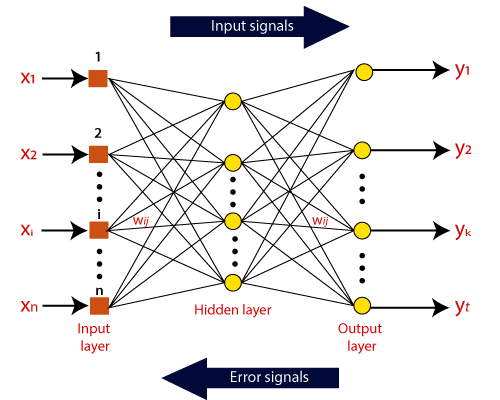

Artificial neural networks (ANNs) are alike to our neural networks and offer a quite good technique, which solves the problem of classification and prediction. An ANN is a mathematical model that is encouraged by the organization and functional feature of natural neural networks, Neural networks involve input and output layers, as well as (in most cases) hidden layers that transform the input into something so the output layer can use. When a neural network used for cancer detections, the ANN Model go through two levels, training and validation. First, the network is trained on a dataset. Then the weights of the connections between neurons are fixed so the network is validated to determine the classifications of a new dataset
The term "Artificial Neural Network" is derived from Biological neural networks that develop the structure of a human brain. Similar to the human brain that has neurons interconnected to one another, artificial neural networks also have neurons that are interconnected to one another in various layers of the networks. These neurons are known as nodes.
Artificial Neural Network can be best represented as a weighted directed graph, where the artificial neurons form the nodes. The association between the neurons outputs and neuron inputs can be viewed as the directed edges with weights. The Artificial Neural Network receives the input signal from the external source in the form of a pattern and image in the form of a vector. These inputs are then mathematically assigned by the notations x(n) for every n number of inputs.
Afterward, each of the input is multiplied by its corresponding weights ( these weights are the details utilized by the artificial neural networks to solve a specific problem ). In general terms, these weights normally represent the strength of the interconnection between neurons inside the artificial neural network. All the weighted inputs are summarized inside the computing unit.
If the weighted sum is equal to zero, then bias is added to make the output non-zero or something else to scale up to the system's response. Bias has the same input, and weight equals to 1. Here the total of weighted inputs can be in the range of 0 to positive infinity. Here, to keep the response in the limits of the desired value, a certain maximum value is benchmarked, and the total of weighted inputs is passed through the activation function.